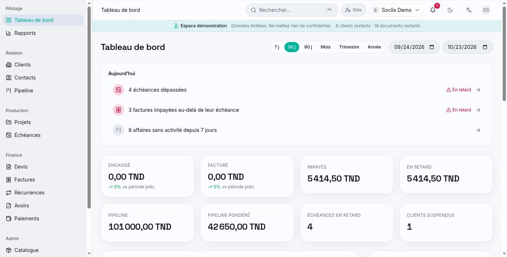
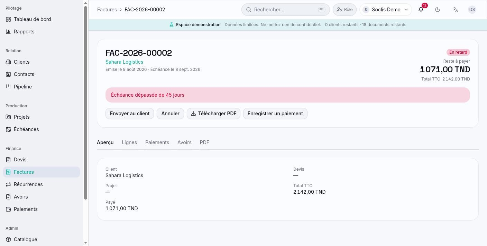

A CRM and billing tool for service companies that follows each client from the first contact to the paid invoice, in French, English and Arabic.
3languages, including Arabic right-to-left
6user roles with their own permissions
3plans: demo, starter and pro
4detailed reports with CSV export
At a glance
SOCLIS CRM is a web application for service companies such as agencies, integrators and maintenance providers. It brings together client records, the sales pipeline, projects and maintenance due dates, quotes, invoices, credit notes and payments in one place.
Several companies use the same application, each with its own separate data. A person can belong to more than one company and hold a different role in each. Clients get their own read-only space through a secure link, without creating an account. The interface works on desktop and mobile, in French, English and Arabic.
Who it's for
Company owners and admins
Set up the company identity, numbering and policies, invite the team and choose what each role can do.
Sales teams
Manage their own client portfolio, follow opportunities on a pipeline board and prepare quotes.
Finance teams
Issue invoices and credit notes, record payments, follow overdue amounts and read the revenue reports.
Managers and viewers
Follow clients, projects and due dates, with read-only access where billing is not part of their job.
End clients
Open a personal link to see their balance, download their invoices and quotes, and accept or decline a quote online.
The problem it solves
Scattered information
Client details, quotes, invoices and payments often live in separate spreadsheets and folders. Here every client has one record that links them all.
Missed due dates
Maintenance contracts and unpaid invoices are easy to forget. The application tracks due dates, marks late items and sends reminders.
Access control
Not everyone should see the financial figures. Each role sees and changes only what it needs, and each salesperson can be limited to their own clients.
Language and local rules
Teams and clients work in French, English or Arabic, and documents follow local invoicing details such as tax ID, VAT and three-decimal dinar amounts.
Main features
Client records
One page per client with contacts, documents, projects, quotes, invoices, payments, service status and history, plus tags, saved filters and CSV import.
Sales pipeline
A drag-and-drop board of opportunities by stage, with totals and a weighted forecast, and a list view.
Projects and maintenance
One-off projects or maintenance contracts with budget, milestones and recurring due dates shown as a list or a monthly calendar.
Quotes
Lines taken from a service catalogue, discounts and VAT, sending by email with the PDF attached, and an online page where the client can respond.
Invoices and credit notes
Invoices created from scratch, from an accepted quote or from a project, recurring invoices, and credit notes linked to the original invoice.
Payments
Bank transfer, cheque or cash, one payment spread over several invoices, and reversal with a reason while keeping the history.
Client portal
A secure link that expires and can be revoked, giving the client their balance, payment instructions and document downloads.
Dashboard and reports
A role-aware dashboard with today's priorities and key figures, and reports on revenue, clients, projects and due dates.
Notifications and history
Alerts for late due dates and unpaid invoices, a full change history, a trash with undo, and a quick search with Ctrl+K.
Plans and quotas
Each company is on a plan that sets limits on clients, users, invoices and storage, with a one-click demo space.
How it works
Set up the company
The owner fills in the company identity and billing settings, then invites team members with a role.
Add clients and opportunities
The team creates or imports clients and moves each opportunity through the pipeline stages.
Quote and get an answer
A quote is built from the catalogue and sent to the client, who accepts or declines it from a link.
Deliver and follow up
Projects and maintenance due dates are tracked, and reminders appear before and after each date.
Invoice and collect
The invoice is created from the quote or project, sent as a PDF in the client's language, and payments are recorded against it.
Review the results
Managers read the dashboard and reports to see revenue, unpaid amounts and upcoming work.
Technologies
Interface
Next.js and ReactBuild the web application, its pages and the public client pages.
TypeScriptUsed on both the interface and the server for consistent, checked code.
Tailwind CSS and Radix UIProvide the visual design and accessible building blocks such as menus and dialogs.
TanStack Query and ZustandKeep data from the server up to date on screen and hold the user session.
RechartsDraws the dashboard charts.
Server & APIs
Node.js and ExpressServe the application's REST API and apply roles, data limits and plan quotas.
ZodChecks every form and request so only valid data is saved.
node-cronRuns the daily jobs: late invoices, reminders, due dates and recurring invoices.
NodemailerSends invitations, quotes, invoices and payment reminders by email.
Data
MySQLStores companies, clients, projects and billing records, kept separate per company.
SequelizeMaps the data model and manages database changes over time.
Documents & languages
PDFKitGenerates quotes, invoices and credit notes as PDFs in French, English or Arabic.
next-intlTranslates the interface and switches to a right-to-left layout in Arabic.
Quality
Node test runnerRuns unit and database-backed tests on quotas, billing, permissions and data separation.
ESLintChecks code style and common mistakes.
Preview

Dashboard with today's priorities and key figures.Sales pipeline board grouped by stage.

Overdue invoice with balance due and billing actions.Client portal with balance, invoices and quotes.
What it brings
One place for the whole cycle
From the first contact to the paid invoice, every step is linked to the same client record.
Fewer forgotten tasks
Late due dates, unpaid invoices and inactive deals are listed each day on the dashboard.
Clear responsibilities
Each role works within its own scope, and every change is recorded in the history.
Easier for clients
Clients answer quotes and find their documents online, in their own language, without an account.